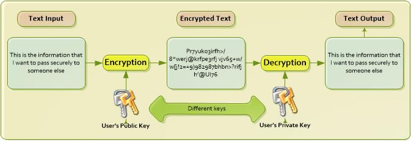

Public Key Infrastructure¶
Overview¶
GOV.UK Verify is a secure service reliant on encryption and signing messages. GOV.UK Verify uses a public key infrastructure (PKI) to confirm the integrity of data passed between GOV.UK Verify and trusted third parties.
A PKI facilitates secure communication over insecure public networks, like the internet. A PKI is used to assure the identity of the owner of the public key through a system of digital certificates. It can provide confidence when encrypting or signing data:
- encrypting data means that it is scrambled in a way that makes it unreadable except to intended recipients
- signing data means proving the source of it, for example an email can be signed with a valid digital signature to prove that it has not been tampered with in transit and that it is from the person that it claims to be from
A PKI issues digital certificates so that an organisation can establish and maintain a trusted network of individuals and services. The PKI provides mechanisms for revoking certificates if needed, for example; if security has been compromised.
Elements of PKI¶
Public and private keys
PKI works on the principle of each user having a pair of keys: a private key and a public key. The user generates the keys by running a mathematical process. The keys themselves consist of very long numbers linked in a particular way the public can be derived from the private but not the other way around. Only the user who generates the keys retains the private key, but their public key can be given to anyone. The certificate authority takes the public key and creates the digital certificate. Any third party can then request confirmation from the certificate authority that the certificate is valid, and the public key it contains is indeed linked to that identity. When encrypting data, a user or service uses the public key of the remote party to scramble a message. This means that only the remote party can unscramble the message because only they hold the corresponding private key. When signing data, a user or service seeks to prove that the data being sent comes from them. They scramble a message using their own private key which allows anyone with their public certificate to be confident of the source.
A certificate is a file that contains a public key. Data encrypted with a public key can only be decrypted with the corresponding private key, and vice versa. You need to generate both private and public keys before you request certificates.
Certificates
PKI is based on digital certificates. A digital certificate can verify the identity of many things, such as a person, a computer or software. For example, to ensure the integrity of a transaction between 2 computers, digital certificates can prove the identity of each machine to the other. However, the certificates must also be authenticated, (issued by a source that one computer knows and trusts so that it accepts the other machine’s certificate as proof of its identity). Digital certificates are authenticated by being issued and signed by a certificate authority.
How PKI works with GOV.UK Verify¶
The Identity Assurance Programme (IDAP) runs it’s own Public Key Infrastructure (PKI) to enable secure transactions across the GOV.UK Verify federation. As part of that federation you will need to use certificates generated from the IDAP PKI and are therefore responsible for ensuring that the terms of the PKI’s Certification Policy are upheld.
The documents you require are explained below. To receive these documents, please ask your Service Delivery Manager to email idappki@digital.cabinet-office.gov.uk.
- The Certification Practice Statement for the Interim PKI for the IDAP Ecosystem is the principal statement of practice governing cryptographic services for the IDAP Ecosystem.
- The IDAP PKI Subscriber Agreement sets out the terms of use of PKI for those using certificates received from the IDAP PKI
- The IDAP PKI Relying Party Agreement sets out terms for those who do not necessarily hold a certificate, but who, during the course of a transaction, may be a recipient of a certificate and place reliance on a Certificate and/or Digital Signatures created using that Certificate. Note: this is the PKI definition of a Relying Party rather than that in common use in the IDAP ecosystem that usually refers to HMG service provider. In this context, the term Relying Party relates to the reliance of any member of the federation on the certificates issued under this Certification Practice.
- The GOV.UK Verify Certification Process for (Goverment Services) Subscribers describes how to acquire certificates from the IDAP PKI. It should be read in conjunction with the Onboarding guide Stage 4, Step 5.
Request PKI certificates¶
BELOW IS CONTENT FROM TECHNICAL GUIDE TO COPY UP TO TITLES ABOVE
How does GOV.UK Verify use PKI?¶
GOV.UK Verify uses a PKI to confirm the integrity of data passed between GOV.UK Verify and trusted third parties. GOV.UK Verify is a secure service based on encryption and signing messages. To interoperate with the GOV.UK Verify hub, you need to obtain signed certificates from a GDS certificate authority for both the integration and production environments. GDS IDAP has 2 certificate authorities from whom you must obtain signed certificates, depending on the environment:
- IDAP Test certificate authority for the integration environment
- IDAP certificate authority for the production environment
Stage 4, step 5 of the Onboarding Guide describes how to apply for these certificates and how to generate the private and public keys. A full description of GDS PKI, the Certification Practice Statement, is also available on request.